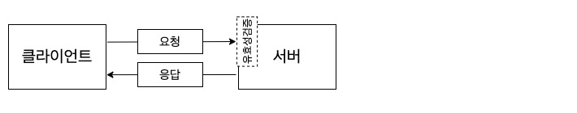
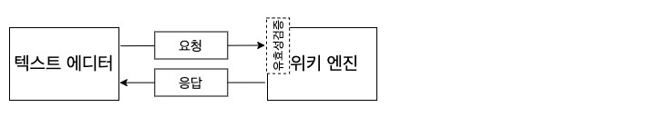
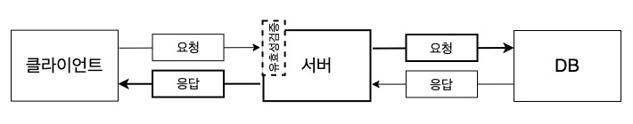
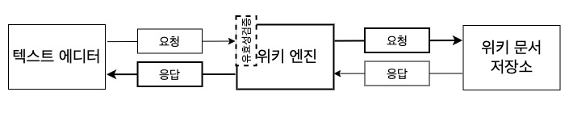

<실용주의 사고와 학습>에서 텍스트 에디터 기반 위키를 알게 된 후로, 나만의 텍스트 에디터 기반 위키 엔진을 만들고 싶다는 마음은 좀처럼 사그라들지 않았다. 그때까지 겪고 있던 문서화의 어려움을 개선해줄 해결책이라고 생각했기 때문이다.
그런 마음과는 정반대로, 어떻게 만들지 오랫동안 감을 잡지 못했다. 다른 이유도 있었겠지만, 위키 엔진 구현에도 서버-클라이언트 개념을 적용할 수 있다는 걸 깨닫지 못했던 게 가장 큰 이유였던 것 같다. 무슨 말이냐면, 서버-클라이언트는 웹 기반이 아닌 프로그램에서도 적용할 수 있는 개념이란 것이다.
흔히 이야기하는 웹 애플리케이션 서버는 웹 브라우저 같은 클라이언트로부터 요청을 받는다. 그러면 서버는 요청이 올바른 형식인지 검증한 다음, 알맞은 응답을 연산해 클라이언트에게 돌려준다.

웹에서와 같은 시선으로 텍스트 에디터 기반 위키 엔진을 이해할 수 있다. 위키 엔진은 텍스트 에디터로부터 요청을 받는다. 그러면 위키 엔진은 요청이 올바른 형식의 요청인지 검증하고 나서 알맞은 응답을 연산해 텍스트 에디터에게 돌려준다. 여기서는 위키 엔진을 서버로, 텍스트 에디터를 클라이언트로 볼 수 있다.

어떤 구성 요소가 서버와 클라이언트 역할을 동시에 하는 경우도 있다. 웹 애플리케이션 서버에 데이터를 적재하기 위한 DB가 있고, 서버가 클라이언트로부터 받은 요청을 처리하기 위해 DB에 적재된 데이터가 필요한 경우도 있다. 이때 서버는 DB에 요청을 보내고, DB는 요청에 맞는 데이터를 찾아 서버에게 돌려준다. 이런 서버와 DB 사이의 통신에서 서버는 클라이언트 역할을, DB는 서버 역할을 맡게 된다. 여기서의 서버는 클라이언트와 서버의 역할을 동시에 맡고 있다.

같은 맥락으로 텍스트 에디터 기반 위키 엔진을 이해할 수 있다. 위키 문서를 디렉토리 안에 적재해두고 있다면, 이 디렉토리를 일종의 DB로 볼 수 있다. 위키 문서를 열려고 할 때, 텍스트 에디터에서 위키 엔진에 요청하면 위키 엔진은 다시 해당 위키 문서를 디렉토리에 요청한다. 그러면 디렉토리는 알맞은 문서를 위키 엔진에게 돌려주고, 위키 엔진은 텍스트 에디터에게 해당 문서를 건넬 수 있게 된다. 여기서는 위키 엔진이 클라이언트와 서버의 역할을 동시에 맡고 있다.

텍스트 기반 위키 엔진은 로컬에서 파일 시스템 기반으로 작동하는 프로그램이다. 하지만 웹 애플리케이션을 만들 때만 활용하던 서버-클라이언트 메타포를 가지고 구현했을 때, 어떤 걸 구현할지 알아내는 게 훨씬 수월했다. 프로그램을 짜면서 어떤 요소가 협력하게 되고, 각 요소가 어떤 역할을 맡게될지 나눠 생각할 수 있었기 때문이다. 구현해야 할 것이 정해지고 난 뒤에는 구현에 쓸 수 있는 기술은 무엇이고, 어떻게 필요한 기능을 구현할 수 있을지가 훨씬 명확해졌다. 내 경우, vim 텍스트 에디터에서 돌아가는 위키 엔진을 구현했고, 다음과 같이 상황에 맞는 기술과 구현 방법을 정할 수 있었다.
만들고 싶은 프로그램이 있는데 어떻게 구현할지 감이 잘 잡히지 않는다면, 서버-클라이언트 개념을 한 번 적용해보는 것은 어떨까.